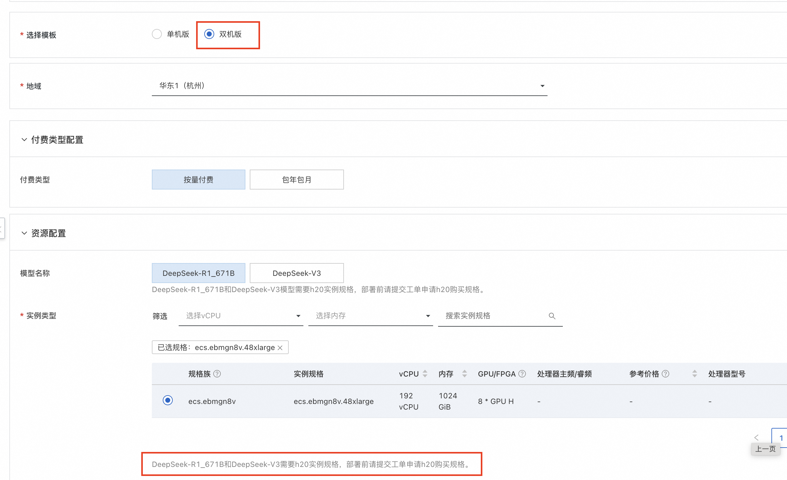
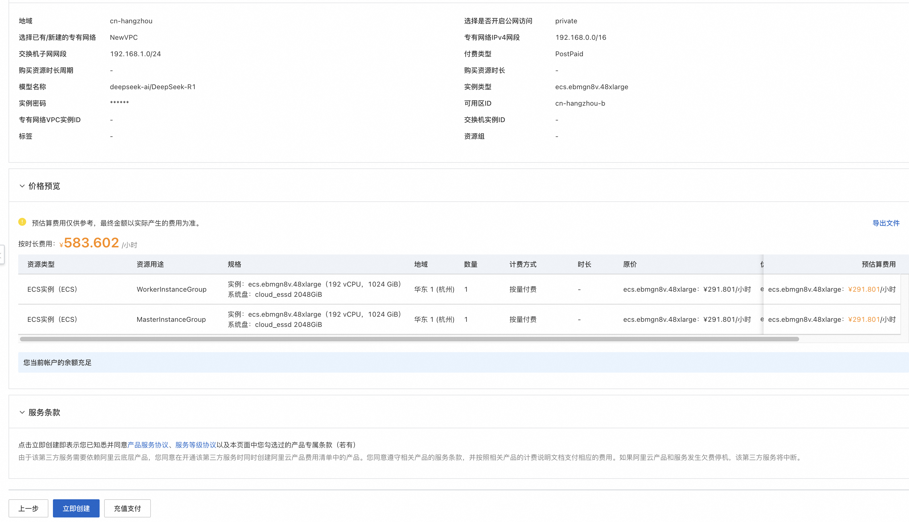
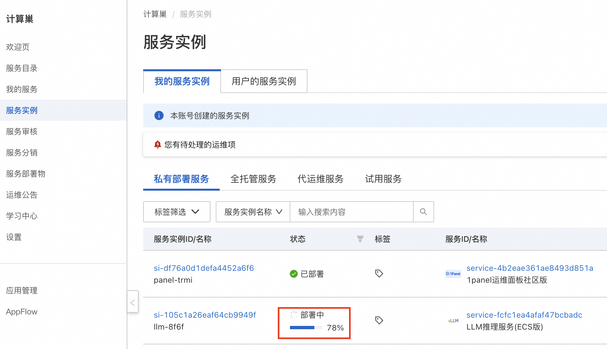
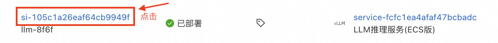
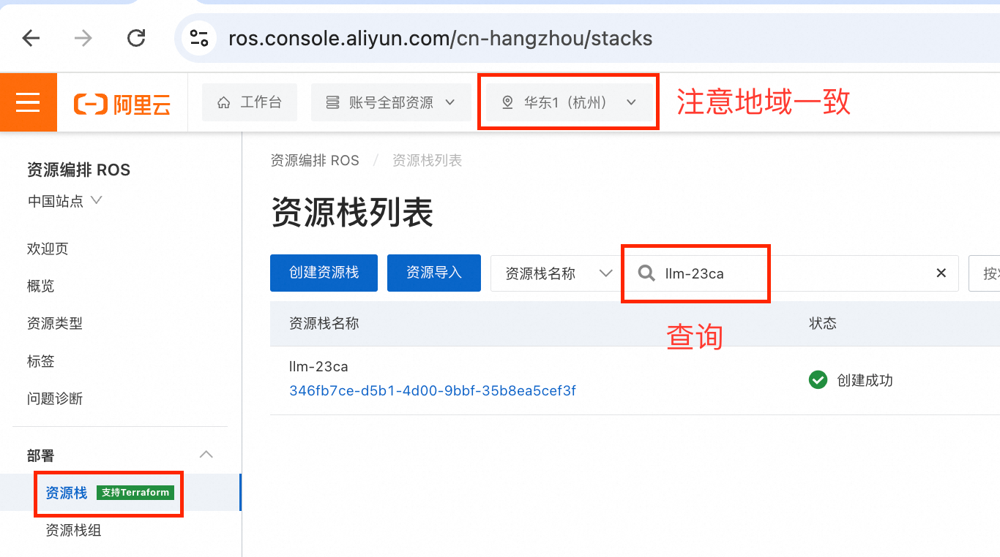
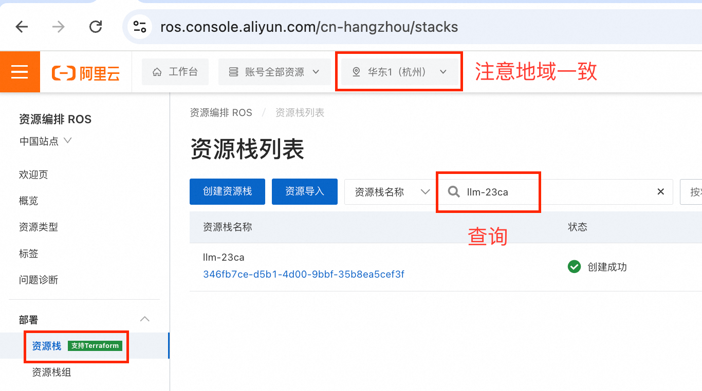
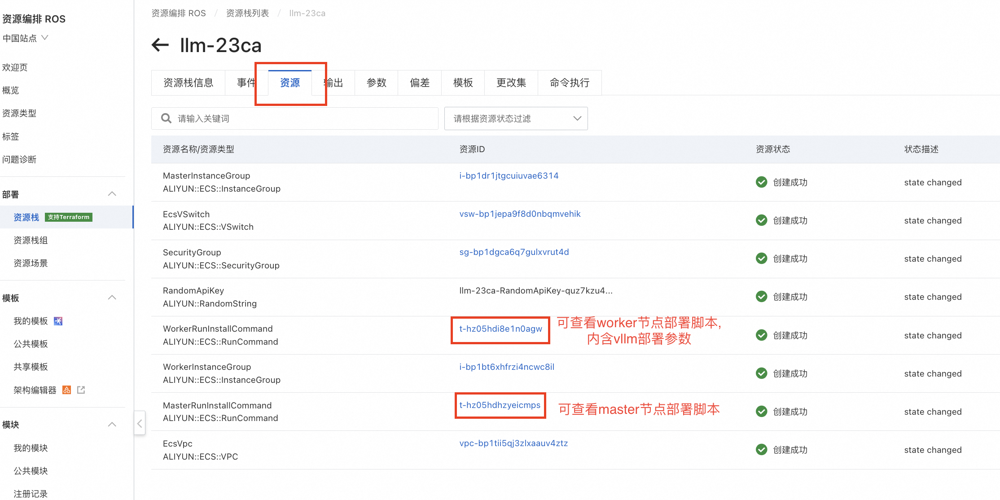
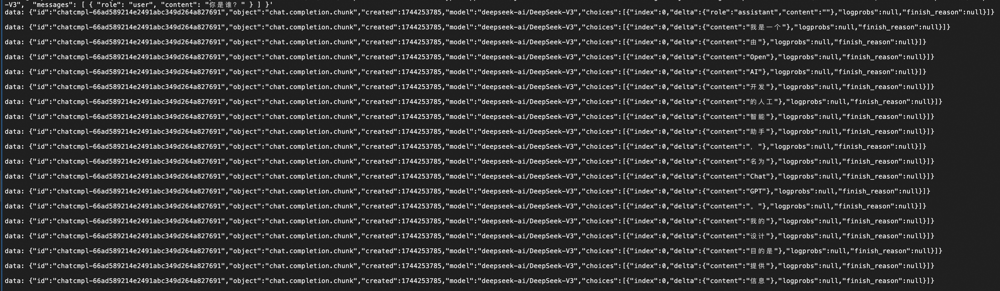
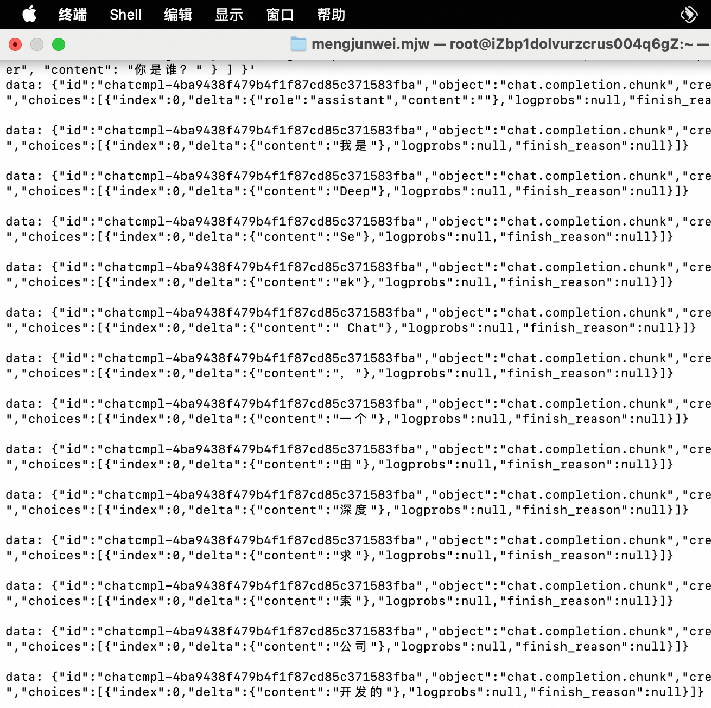
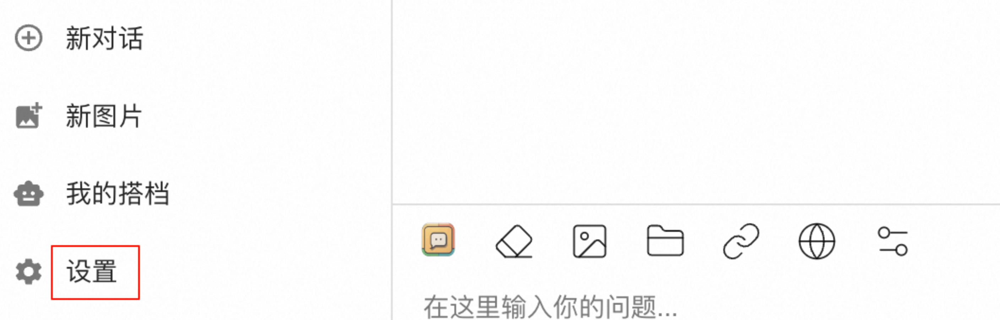

基于双ECS实例的DeepSeek-R1和V3模型部署文档
部署说明
本服务提供了基于ECS镜像+Vllm+Ray的大模型一键部署方案，30分钟即可通过双ECS实例部署使用DeepSeek-R1满血版和DeepSeek-V3模型。
本服务通过ECS镜像打包标准环境，通过Ros模版实现云资源与大模型的一键部署，开发者无需关心模型部署运行的标准环境与底层云资源编排，仅需添加几个参数即可享受DeepSeek-R1满血版和DeepSeek-V3的推理体验。
本服务提供的方案下，以平均每次请求的token为10kb计算，采用两台GU8TF规格的ECS实例，DeepSeek-R1满血版理论可支持的每秒并发请求数(QPS)约为75，DeepSeek-V3约为67。
本服务支持的模型如下： * deepseek-ai/DeepSeek-R1 * deepseek-ai/DeepSeek-V3
整体架构

计费说明
本服务在阿里云上的费用主要涉及： * 所选GPU云服务器的规格 * 节点数量 * 磁盘容量 * 公网带宽 计费方式：按量付费（小时）或包年包月 预估费用在创建实例时可实时看到。
RAM账号所需权限
部署服务实例，需要对部分阿里云资源进行访问和创建操作。因此您的账号需要包含如下资源的权限。
| 权限策略名称 | 备注 |
|---|---|
| AliyunECSFullAccess | 管理云服务器服务（ECS）的权限 |
| AliyunVPCFullAccess | 管理专有网络（VPC）的权限 |
| AliyunROSFullAccess | 管理资源编排服务（ROS）的权限 |
| AliyunComputeNestUserFullAccess | 管理计算巢服务（ComputeNest）的用户侧权限 |
部署流程
- 单击部署链接。选择双机版，并确认已申请GU8TF实例规格。根据界面提示填写参数，可根据需求选择是否开启公网，可以看到对应询价明细，确认参数后点击下一步：确认订单。


- 点击下一步：确认订单后可以看到价格预览，随后可点击立即部署，等待部署完成。(提示RAM权限不足时需要为子账号添加RAM权限) 
- 等待部署完成后，就可以开始使用服务了。点击服务实例名称，进入服务实例详情，使用Api调用示例即可访问服务。如果是内网访问，需保证ECS实例在同一个VPC下。



- ssh访问ECS实例后，执行 docker logs vllm 即可查询模型服务部署日志。当您看到下图所示结果时，表示模型服务部署成功。模型所在路径为/root/llm_model/。

使用说明
查询模型部署参数
- 复制服务实例名称。到资源编排控制台查看对应的资源栈。
 
 - 进入服务实例对应的资源栈，可以看到所开启的全部资源，并查看到模型部署过程中执行的全部脚本。


自定义模型部署参数
如果您有自定义的模型部署参数的需求，可以在部署服务实例后，按照如下操作步骤进行修改。当前提供vllm和sglang两种部署方式。
- 远程连接，分别登入master节点和worker节点（两台实例分别命名为llm-xxxx-master和llm-xxxx-worker）。

- 执行下面的命令，将两个节点内的模型服务都停止。 ```shell sudo docker stop vllm sudo docker rm vllm
- 请参考本文档中的 查询模型部署参数 部分，获取master节点和worker节点中模型部署实际执行的脚本。
- 下面分别是vllm与sglang部署的参考脚本，您可参考参数注释自定义模型部署参数，修改实际执行的脚本。修改后，先执行master节点脚本，成功后，再执行worker节点脚本即可。
- vllm部署master节点参考脚本 ```shell docker run -t -d \ --entrypoint /bin/bash \ --name=vllm \ --ipc=host \ --cap-add=SYS_PTRACE \ --network=host \ --gpus all \ --privileged \ --ulimit memlock=-1 \ --ulimit stack=67108864 \ -v /root:/root \ egs-registry.cn-hangzhou.cr.aliyuncs.com/egs/vllm:0.7.2-sglang0.4.3.post2-pytorch2.5-cuda12.4-20250224 \ -c "pip install --upgrade vllm==0.8.2 && # 可自定义版本，如 pip install vllm==0.7.1。必须与worker节点保持一致。 export NCCL_IB_DISABLE=0 && # 采用弹性RDMA进行高速网络通信所需环境变量，不建议改变 export NCCL_DEBUG=INFO && # 采用弹性RDMA进行高速网络通信所需环境变量，不建议改变 export NCCL_NET_GDR_LEVEL=5 && # 采用弹性RDMA进行高速网络通信所需环境变量，不建议改变 export NCCL_P2P_LEVEL=5 && # 采用弹性RDMA进行高速网络通信所需环境变量，不建议改变 export NCCL_IB_GID_INDEX=1 && # 采用弹性RDMA进行高速网络通信所需环境变量，不建议改变 export GLOO_SOCKET_IFNAME=eth0 && # 采用vpc进行网络通信所需环境变量，勿删改 export NCCL_SOCKET_IFNAME=eth0 && # 采用vpc进行网络通信所需环境变量，勿删改 ray start --head --dashboard-host 0.0.0.0 --port=6379 && tail -f /dev/null"
- vllm部署worker节点参考脚本 ```shell docker run -t -d \ --entrypoint /bin/bash \ --name=vllm \ --ipc=host \ --cap-add=SYS_PTRACE \ --network=host \ --gpus all \ --privileged \ --ulimit memlock=-1 \ --ulimit stack=67108864 \ -v /root:/root \ egs-registry.cn-hangzhou.cr.aliyuncs.com/egs/vllm:0.7.2-sglang0.4.3.post2-pytorch2.5-cuda12.4-20250224 \ -c "pip install --upgrade vllm==0.8.2 && # 可自定义版本，如 pip install vllm==0.7.1。必须与master节点保持一致。 export NCCL_IB_DISABLE=0 && # 采用弹性RDMA进行高速网络通信所需环境变量，不建议改变 export NCCL_DEBUG=INFO && # 采用弹性RDMA进行高速网络通信所需环境变量，不建议改变 export NCCL_NET_GDR_LEVEL=5 && # 采用弹性RDMA进行高速网络通信所需环境变量，不建议改变 export NCCL_P2P_LEVEL=5 && # 采用弹性RDMA进行高速网络通信所需环境变量，不建议改变 export NCCL_IB_GID_INDEX=1 && # 采用弹性RDMA进行高速网络通信所需环境变量，不建议改变 export GLOO_SOCKET_IFNAME=eth0 && # 采用vpc进行网络通信所需环境变量，勿删改 export NCCL_SOCKET_IFNAME=eth0 && # 采用vpc进行网络通信所需环境变量，勿删改 ray start --address='${HEAD_NODE_ADDRESS}:6379' && # 填写master节点的内网IP地址。 vllm serve /root/llm-model/${ModelName} \ --served-model-name ${ModelName} \ --gpu-memory-utilization 0.98 \ # Gpu占用率，过高可能导致其他进程触发OOM。取值范围:0~1 --max-model-len ${MaxModelLen} \ # 模型最大长度，取值范围与模型本身有关。 --enable-chunked-prefill \ --host=0.0.0.0 \ --port 8000 \ --trust-remote-code \ --api-key "${VLLM_API_KEY}" \ --tensor-parallel-size $(nvidia-smi --query-gpu=index --format=csv,noheader | wc -l | awk '{print $1}') \ # 单节点使用GPU数量，默认使用单台ECS实例的全部GPU。 --pipeline-parallel-size 2" # 流线并行数，推荐设置为节点总数。
- sglang部署master节点参考脚本 ```shell docker run -d -t --net=host --gpus all \ --entrypoint /bin/bash \ --privileged \ --ipc=host \ --name llm-server \ -v /root:/root \ egs-registry.cn-hangzhou.cr.aliyuncs.com/egs/vllm:0.7.2-sglang0.4.3.post2-pytorch2.5-cuda12.4-20250224 \ -c "pip install sglang==0.4.3 && # 可自定义版本，必须与worker节点保持一致 export NCCL_IB_DISABLE=0 && # 采用弹性RDMA进行高速网络通信所需环境变量，不建议改变 export NCCL_DEBUG=INFO && # 采用弹性RDMA进行高速网络通信所需环境变量，不建议改变 export NCCL_NET_GDR_LEVEL=5 && # 采用弹性RDMA进行高速网络通信所需环境变量，不建议改变 export NCCL_P2P_LEVEL=5 && # 采用弹性RDMA进行高速网络通信所需环境变量，不建议改变 export NCCL_IB_GID_INDEX=1 && # 采用弹性RDMA进行高速网络通信所需环境变量，不建议改变 export GLOO_SOCKET_IFNAME=eth0 && # 采用vpc进行网络通信所需环境变量，勿删改 export NCCL_SOCKET_IFNAME=eth0 && # 采用vpc进行网络通信所需环境变量，勿删改 python3 -m sglang.launch_server \ --model-path /root/llm-model/${ModelName} \ --served-model-name ${ModelName} \ --tp 16 \ # 当前sglang不支持流线并行，默认使用两台ECS实例中全部GPU。 --dist-init-addr ${HEAD_NODE_ADDRESS}:20000 # 填写master节点的内网IP地址。 --nnodes 2 # 节点总算，默认使用两台ECS实例。 --node-rank 0 # 节点序号，默认为0。 --trust-remote-code \ --host 0.0.0.0 \ --port 8000 \ --mem-fraction-static 0.9 # Gpu占用率，过高可能导致其他进程触发OOM。取值范围:0~1
- sglang部署worker节点参考脚本 ```shell docker run -d -t --net=host --gpus all \ --entrypoint /bin/bash \ --privileged \ --ipc=host \ --name llm-server \ -v /root:/root \ egs-registry.cn-hangzhou.cr.aliyuncs.com/egs/vllm:0.7.2-sglang0.4.3.post2-pytorch2.5-cuda12.4-20250224 \ -c "pip install sglang==0.4.3 && # 可自定义版本，必须与master节点保持一致 export NCCL_IB_DISABLE=0 && # 采用弹性RDMA进行高速网络通信所需环境变量，不建议改变 export NCCL_DEBUG=INFO && # 采用弹性RDMA进行高速网络通信所需环境变量，不建议改变 export NCCL_NET_GDR_LEVEL=5 && # 采用弹性RDMA进行高速网络通信所需环境变量，不建议改变 export NCCL_P2P_LEVEL=5 && # 采用弹性RDMA进行高速网络通信所需环境变量，不建议改变 export NCCL_IB_GID_INDEX=1 && # 采用弹性RDMA进行高速网络通信所需环境变量，不建议改变 export GLOO_SOCKET_IFNAME=eth0 && # 采用vpc进行网络通信所需环境变量，勿删改 export NCCL_SOCKET_IFNAME=eth0 && # 采用vpc进行网络通信所需环境变量，勿删改 python3 -m sglang.launch_server \ --model-path /root/llm-model/${ModelName} \ --served-model-name ${ModelName} \ --tp 16 \ # 当前sglang不支持流线并行，默认使用两台ECS实例中全部GPU。 --dist-init-addr ${HEAD_NODE_ADDRESS}:20000 # 填写master节点的内网IP地址。 --nnodes 2 # 节点总算，默认使用两台ECS实例。 --node-rank 1 # 节点序号，默认为1。 --trust-remote-code \ --host 0.0.0.0 \ --port 8000 \ --mem-fraction-static 0.9 # Gpu占用率，过高可能导致其他进程触发OOM。取值范围:0~1
内网API访问
复制Api调用示例，在资源标签页的ECS实例中粘贴Api调用示例即可。也可在同一VPC内的其他ECS中访问。

公网API访问
复制Api调用示例，在本地终端中粘贴Api调用示例即可。

使用 Chatbox 客户端配置 vLLM API 进行对话(可选)
- 访问 Chatbox 下载地址下载并安装客户端，本方案以 macOS M3 为例。

- 运行并配置 vLLM API ，单击设置。 
- 在弹出的看板中按照如下表格进行配置。
| 项目 | 说明 | 示例值 |
|---|---|---|
| 模型提供方 | 下拉选择模型提供方。 | 添加自定义提供方 |
| 名称 | 填写定义模型提供方名称。 | vLLM API |
| API 域名 | 填写模型服务调用地址。 | http:// |
| API 路径 | 填写 API 路径。 | /v1/chat/completions |
| 网络兼容性 | 点击开启改善网络兼容性 | 开启 |
| API 密钥 | 填写模型服务调用 API 密钥。 | 部署服务实例后，在服务实例页面可获取Api_Key |
| 模型 | 填写调用的模型。 | deepseek-ai/DeepSeek-R1 |
- 保存配置。在文本输入框中可以进行对话交互。输入问题你是谁？或者其他指令后，调用模型服务获得相应的响应。

性能测试
压测过程(供参考)
前提条件： 1. 无法直接测试带api-key的模型服务；2. 需要公网。
重新部署模型服务
- 远程连接，登入worker节点（命名为llm-xxxx-worker）。

- 执行下面的命令，将模型服务停止。 ```shell sudo docker stop vllm sudo docker rm vllm
- 请参考本文档中的 查询模型部署参数 部分，获取worker节点模型部署实际执行的脚本。
- 去掉脚本中的--api-key参数，在ECS实例中执行剩余脚本。执行docker logs vllm。若结果如下图所示，则模型服务重新部署成功。
进行性能测试
以Deepseek-R1为例，模型服务部署完成后，ssh登录ECS实例。执行下面的命令，即可得到模型服务性能测试结果。可根据参数说明自行修改。 ```shell yum install -y git-lfs git lfs install git lfs clone https://www.modelscope.cn/datasets/gliang1001/ShareGPT_V3_unfiltered_cleaned_split.git git lfs clone https://github.com/vllm-project/vllm.git
docker exec vllm bash -c "
pip install pandas datasets &&
python3 /root/vllm/benchmarks/benchmark_serving.py \
--backend vllm \
--model /root/llm-model/deepseek-ai/DeepSeek-R1 \
--served-model-name deepseek-ai/DeepSeek-R1 \
--sonnet-input-len 1024 \ # 最大输入长度
--sonnet-output-len 4096 \ # 最大输出长度
--sonnet-prefix-len 50 \ # 前缀长度
--num-prompts 400 \ # 从数据集中随机选取或按顺序处理 400 个 prompt 进行性能测试。
--request-rate 20 \ # 模拟每秒 20 个并发请求的压力测试，持续20秒，共400个请求。评估模型服务在负载下的吞吐量和延迟。
--port 8000 \
--trust-remote-code \
--dataset-name sharegpt \
--save-result \
--dataset-path /root/ShareGPT_V3_unfiltered_cleaned_split/ShareGPT_V3_unfiltered_cleaned_split.json
"
```
性能测试结果
本服务方案下，针对Deepseek-R1和V3，分别测试QPS为75和60情况下模型服务的推理响应性能，压测持续时间均为20s。
Deepseek-R1
QPS为75

Deepseek-V3
QPS为60